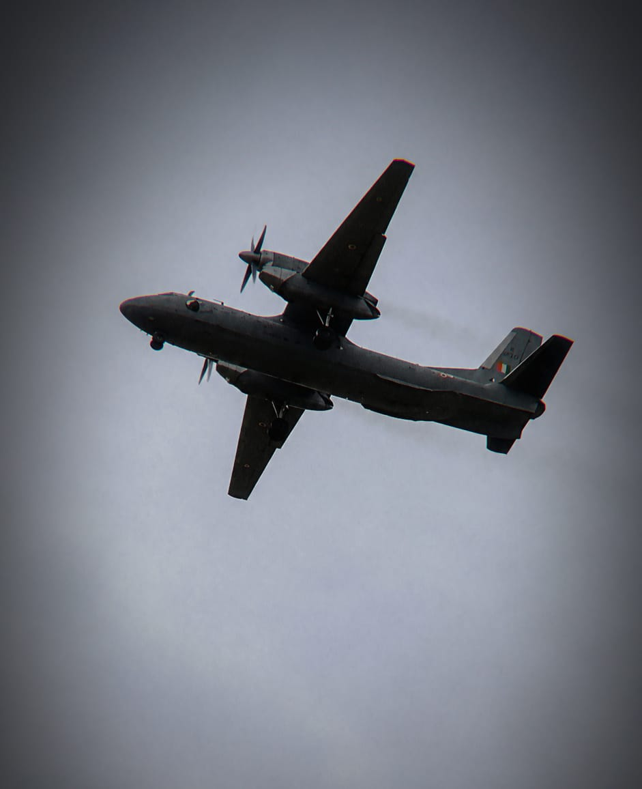
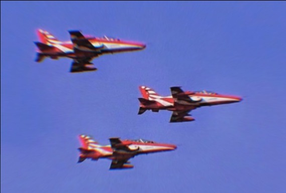
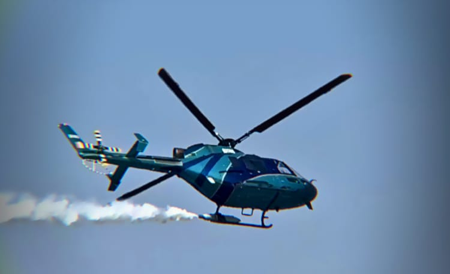
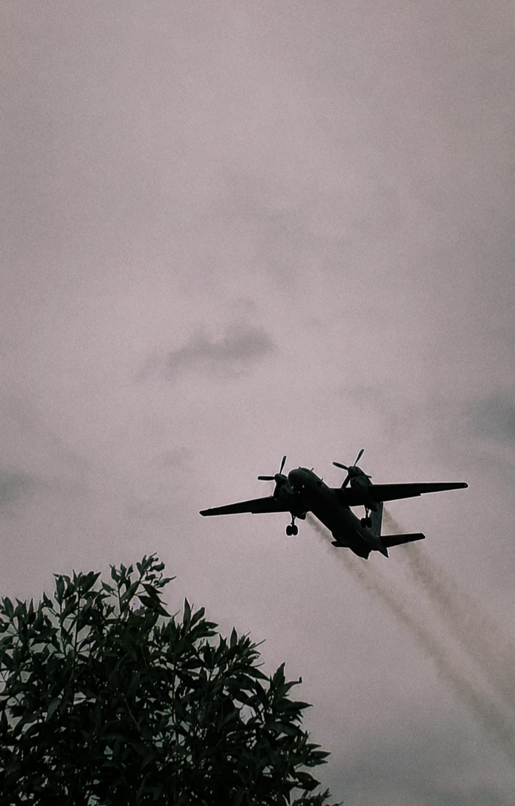
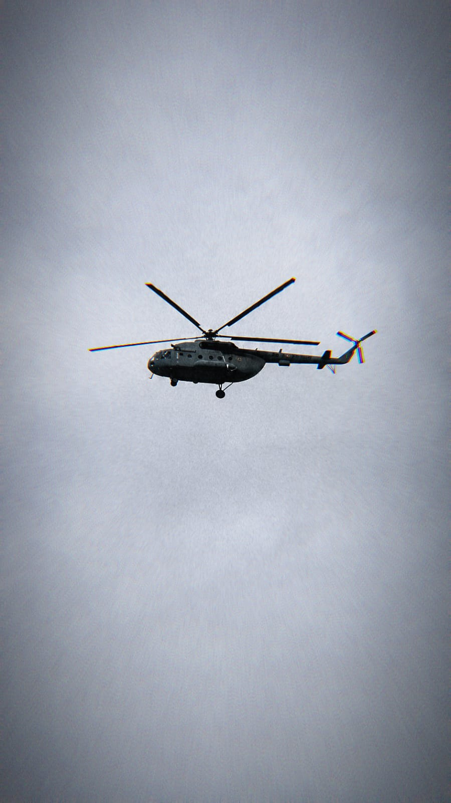
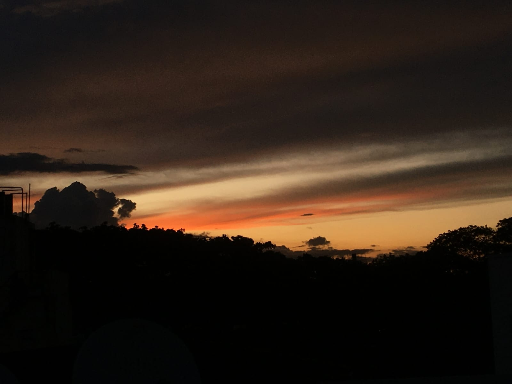
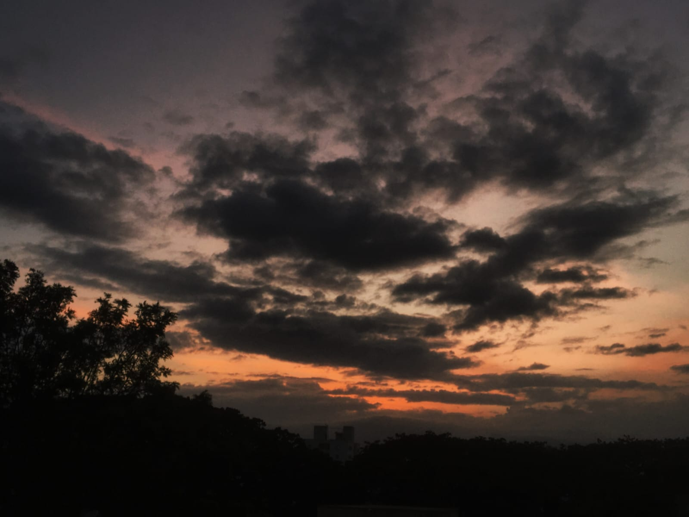
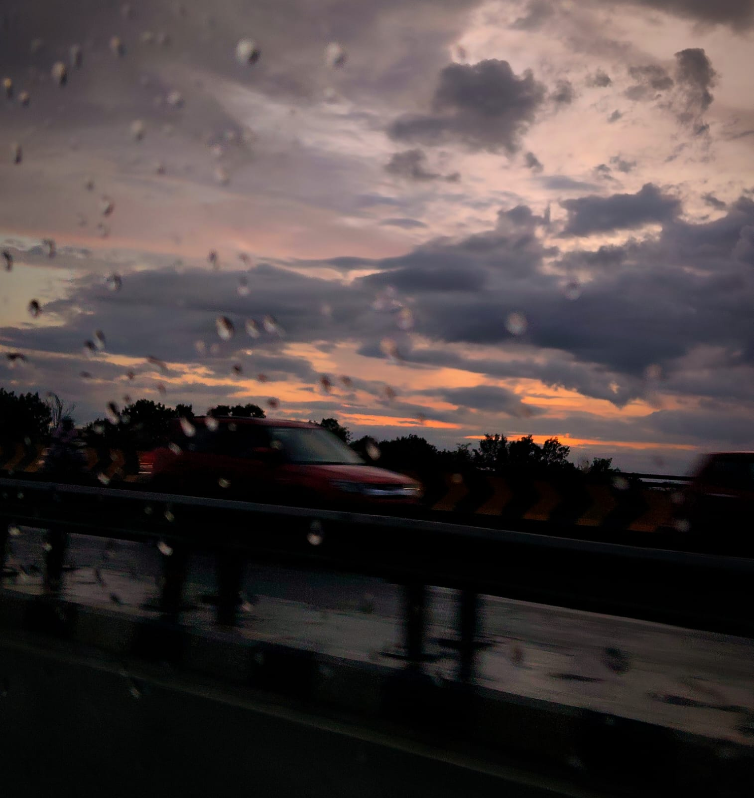
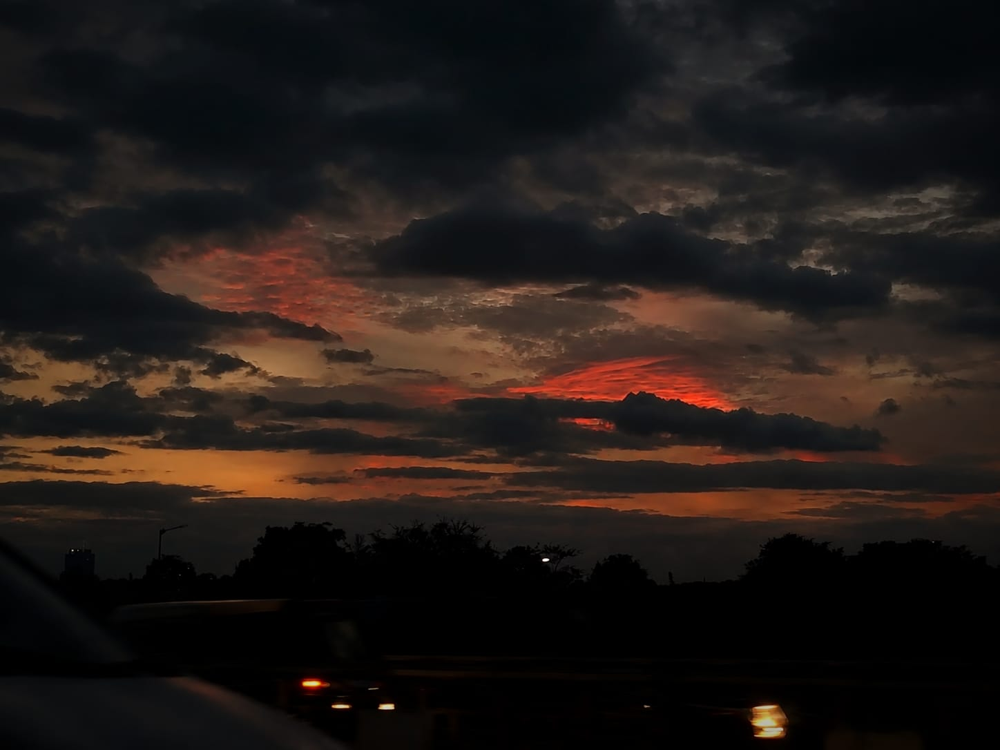

Photography
Photography is another area that I am deeply interested in, particularly aviation photography and sky photography. I enjoy capturing aircraft in flight, moments in the sky, and the changing atmosphere around them.
For me, photography is a way of combining observation, patience, and creativity. Aviation photography especially allows me to explore my interest in aircraft while developing a different perspective through the camera.
My photography / 02
A growing archive
Personal aviation, aircraft, sky, and other photography.








